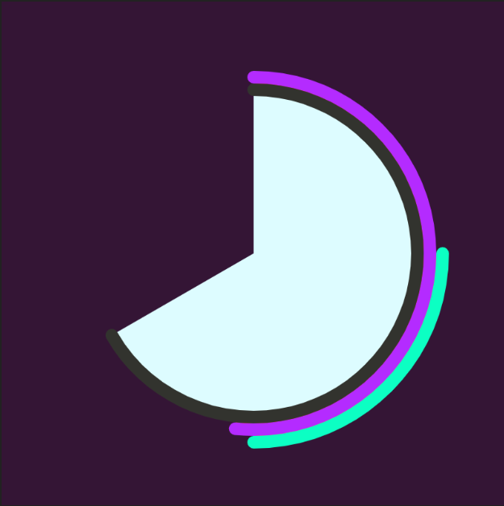
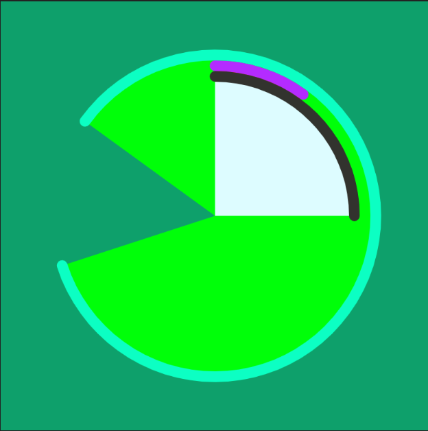
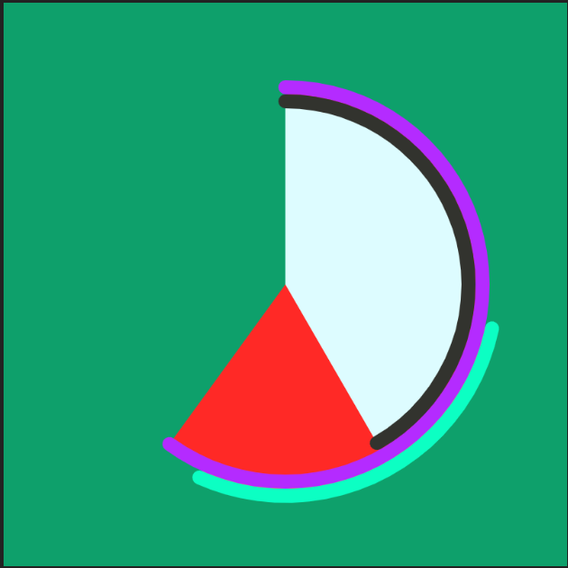
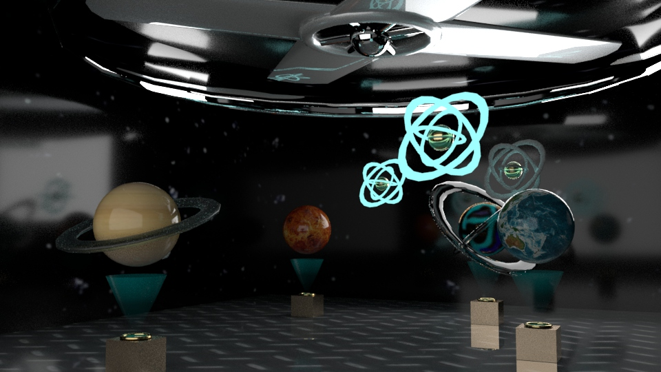
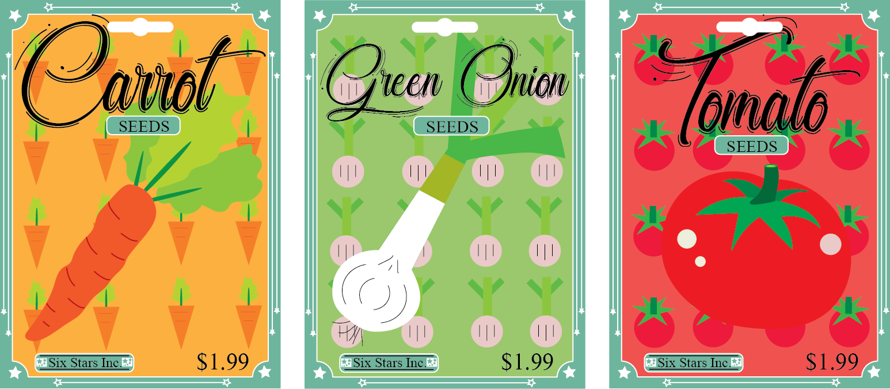
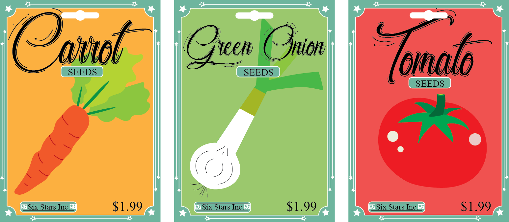

Juan Moreno Guzman - List of Works
Click the Images of the works to see a Larger display of them. Thanks!

Mega Red Helmet Alterations
18" x 24"
Overall, one of my favorite pieces. For this I made different variations/alterations of an object, which happens to be the Red Power Ranger In Space Helmet "Mega Red." The variations were each made individually in bristol board with micron pen, gouache paints, colored pencils, and pencil; They were then carefully cut and placed on drawing paper. Variations made were: side view, dotted, lines, melted, shaded, geometric shapes only, noise and one that imitates a certain piece by a certain artist...
Click for bigger image
Squall vs Seifer
14" x 11"
This photograph was developed using the darkroom process. After many attempts I finally got it to look good. It is a scene that shows action figures: Squall and Seifer from Final Fantasy VIII, getting ready to fight. It is originally from a set of 4 images that tell a story. This was the most dynamic one.
See bigger image

City Hall After Effects
This was a project I made using Adobe Premiere and After Effects. It is supposed to give a small taste of a view I have of the future. Seeing many designs vibrantly being projected at buildings in cities, which in turn gives the buildings and structures more life and will make our world feel more futuristic.
play video{kind=link}
Michael Jackson - Book Cover
This is a book cover of Michael Jackson’s book: “Moonwalker” that I made using illustrator. The designs are probably not as good looking as the real thing was, but I certainly did try my best to capture it, especially since I was only using mouse and keyboard. And since no tablet was involved, I think it turned out pretty good.
see larger imagep5 Clock
The overall clock was made in Atom using p5.js code, through the use of arcs and other commands that keep track of time. The seconds bar is the cyan colored arc and its fill displays a different color with each passing second (achieved with colorMode). It begins small but it expands around the clock, once the arc connects, 60 seconds have gone by. The purple arc with a red fill displays minutes and the black arc with a white fill displays hours (their fill however, doesn’t change color.) During P.M hours a green turquoise color is displayed and during A.M hours a purple background is displayed.
Click here to see Clocksee code


8:30AM---AND---2:50AM
 3:40PM---AND---5:35PM


A Taste of Space
960 x 540
This is a Virtual Installation I made in Maya. It is supposed to be a virtual installation that gives you a tiny taste of outer space with a 3D view of the planets of our solar systems and some distant galaxies and stars. The big fan is there to make the scene feel cold just like outer space.
See bigger image{kind=link}

{kind=link}
Seed Packets
These are some seed packets I made using Illustrator. There's two versions: the first set has small vegetables in the background of the respective vegetable and the second one doesn’t, one of the reasons being because my designs needed some space to breathe.
Click for front and back images{kind=link}
 
{kind=link}
{kind=link}

Power Chords
23" x 20"
This piece was made by cutting small metal bars into different sized pieces, I then welded them together to create this piece. The name comes from a man that saw me carrying it on my way back to school from the Foundry. He told me to "Power Chord it" Whatever that meant. That statement stuck and I decided to name the piece "Power Chords."
See bigger image


The Cyan Wooden Sword
9" x 20'5"
For this piece, the goal was to make a piece that “contains, displays, or stores something” from a semi medium piece of wood. Many people made boxes, but me being the gamer I am, I made a Sword that displays trading cards, it certainly got some attention.
See bigger image